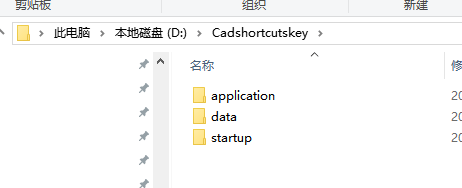
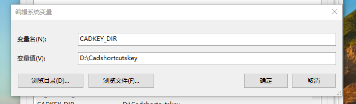
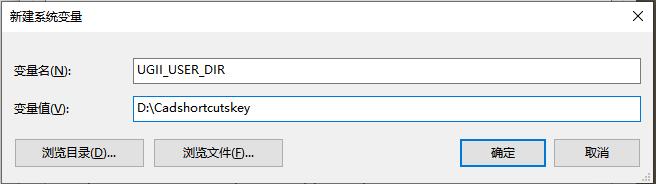
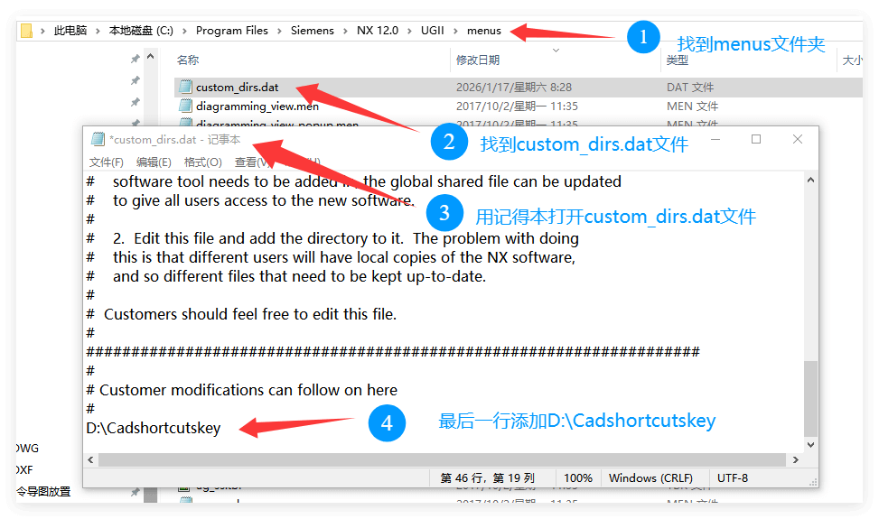
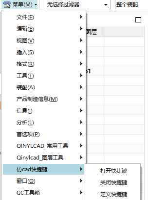
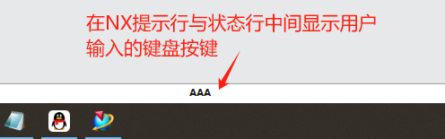
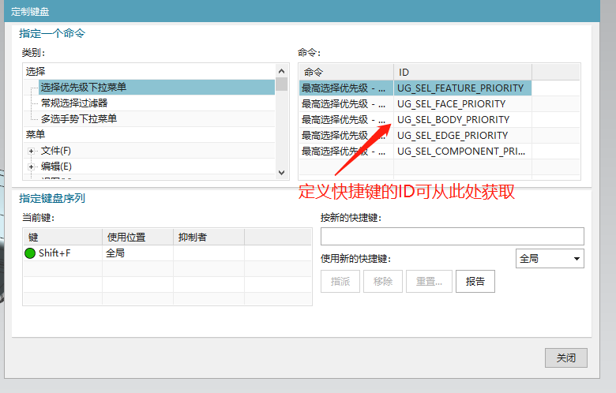

高效实用的UG辅助工具 | 免费下载 · 简单易用
本插件专为UG（Unigraphics NX）设计软件开发，模仿AutoCAD快捷键逻辑实现多按键组合使用：例如根据个人习惯按下AA执行UG全部显示的命令、按下SS执行UG反转显示和隐藏的命令等。
插件旨在充分利用左手附近的按键，大幅提升设计效率，适配系统Win10 UG NX 6.0及以上版本，完全免费使用，但需每半年重新下载许可文件强制更新。
文件说明：
温馨提示：下载后建议关掉杀毒软件再解压以防误杀，本插件为合规开发，无任何恶意代码，可添加信任，放心使用。
🔒 许可机制说明
• 插件免费使用，为保护原创，采用许可文件验证。
• 许可有效期半年，作者会在每年6月1日和12月1日前更新，到期只需重新下载最新许可文件覆盖即可继续使用。
• 无需注册、无需登录、无需联网，纯本地使用。
如果这款【NX模仿CAD快捷键插件】帮你提升了工作效率，欢迎随意打赏（金额不限），所有打赏将用于插件的持续维护、更新和功能优化，感谢你的支持～
打赏时备注：助力模仿CAD快捷键插件
微信打赏
打赏时备注：助力NX模仿CAD快捷键插件
支付宝打赏

CADKEY_DIR，变量值 D:\Cadshortcutskey。

UGII_USER_DIR，值设为 D:\Cadshortcutskey；若该环境变量已被占用，需在 D:\Program Files\Siemens\NX 12.0\UGII\menus\custom_dirs.dat（按自身安装版本调整路径）最后一行添加 D:\Cadshortcutskey。




button_id.ini 文件定义快捷键，保存后生效。